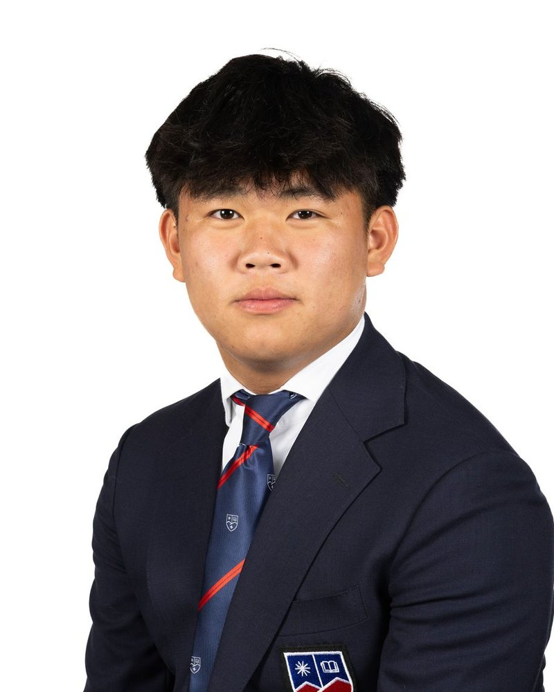

Vasilis Ektoras
Founder & Editor
Vasilis is a Year 13 student at La Garenne International School. He has an academic interest in mathematics and finance, and a more personal passion for economics and the global economy.
Team
A small group of IB students at La Garenne International School.
Founder & Editor
Vasilis is a Year 13 student at La Garenne International School. He has an academic interest in mathematics and finance, and a more personal passion for economics and the global economy.
Researcher
Mariia is a Year 13 student whose academic passion is history, alongside English language and literature. She plans to pursue a career in corporate law, which is what draws her to how economic factors shape corporate decisions and strategy.

Researcher
Wentao is a Year 13 student with an academic interest in business and hospitality, and a more personal passion for economics and foreign affairs.
Researcher
Michael is a Year 13 student with an academic interest in physics and philosophy, and a more personal passion for economics and global events.
Contributors & thanks
We are grateful to the teachers, mentors, and people in Kenya who have given us their time. If you would like to contribute an article or review a draft, see the contact page.